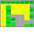

Featured Projects
The Mozilla community produces a lot of great software. This page contains links to some of the most popular projects and also provides links to places where you can find even more projects.
Mozilla Applications
These applications are developed by the Mozilla community and their code is hosted on mozilla.org.
-
Camino® is a Web browser optimized for Mac OS X with a Cocoa user interface, and powerful Gecko layout engine. It's the simple, secure, and fast browser for Mac OS X. Camino
Camino -
Firefox
The award-winning Web browser is now faster, more secure, and fully customizable to your online life. With Firefox® 2, we've added powerful new features that make your online experience even better. -
SeaMonkey® is the all-in-one application formerly known as the "Mozilla Application Suite", containing a web browser, a mail and newsgroups client, an HTML editor, web development tools, and an IRC chat client in a single software package. SeaMonkey
SeaMonkey -
Sunbird® is a cross-platform application that brings Mozilla-style ease-of-use to your calendar. The Lightning extension adds a fully integrated calendar to Mozilla Thunderbird. Sunbird and Lightning
Sunbird and Lightning -
Thunderbird
Thunderbird™ is Mozilla's next generation e-mail client. Thunderbird makes emailing safer, faster and easier than ever before.
Mozilla-Based Applications
These applications are built by individuals and organizations using Mozilla technologies. If you would like to suggest other applications to feature here, please let us know.
-
A simple application that uses the Gecko browser engine to provide a browser for the low-cost laptop that will be made available to children in developing nations around the world. One Laptop Per Child Web Browser
One Laptop Per Child Web Browser -
TomTom HOME gives access to a huge array of services for users of TomTom's navigation solutions, including installing maps, making back-ups and downloading software updates. TomTom HOME
TomTom HOME - See more Mozilla-based applications...
Add-ons
-
Find the latest and greatest extensions, themes and plugins for Firefox, Thunderbird, SeaMonkey and Sunbird. Add-ons Site
Add-ons Site
Development Tools
-
Bonsai allows you to "see" changes taking place during a development cycle including checkin history, log information, diffs, and other useful information. Bonsai
Bonsai -
Bugzilla™ is a bug tracking system designed to help teams manage software development. Hundreds of organizations across the globe are using this powerful tool to get organized and communicate effectively. Bugzilla
Bugzilla -
Tinderbox
Tinderbox is the first program to allow developers and management to see at a glance what is currently going on in all aspects of the development process. - See more development tools...
Technologies
-
Tamarin is a JavaScript engine written in C++. It currently implements Adobe ActionScript® 3 (a superset of ECMAScript Edition 3) and is embedded within the Adobe® Flash® Player 9. Tamarin
Tamarin -
XPCOM is a cross platform component object model. It has multiple language bindings, letting the XPCOM components be used and implemented in JavaScript, Java, and Python in addition to C++.XPCOM -
The XML User Interface Language lets you build feature-rich cross platform applications that can run connected or disconnected from the Internet.XUL - See more Mozilla technologies...